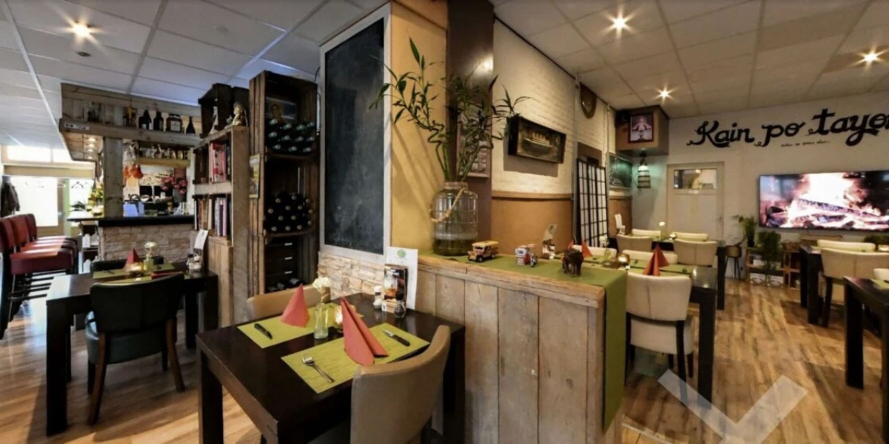
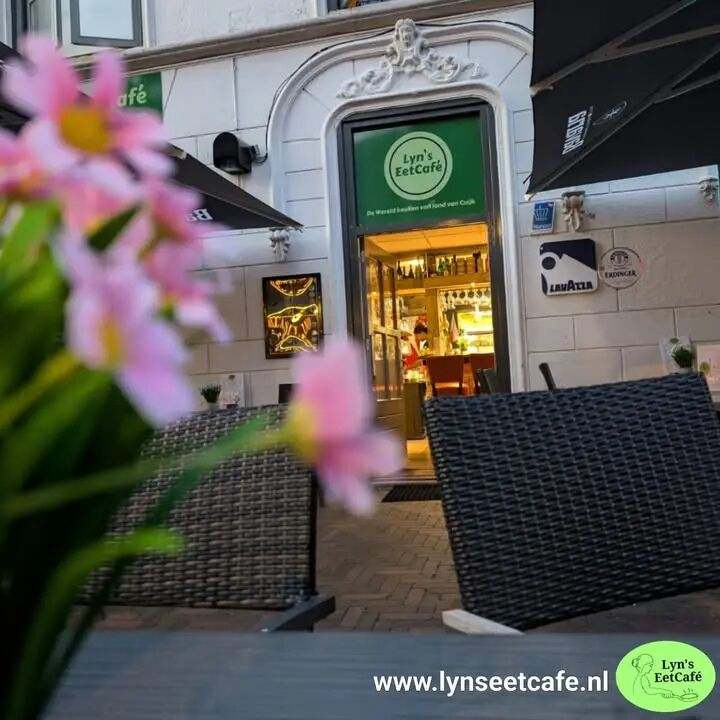
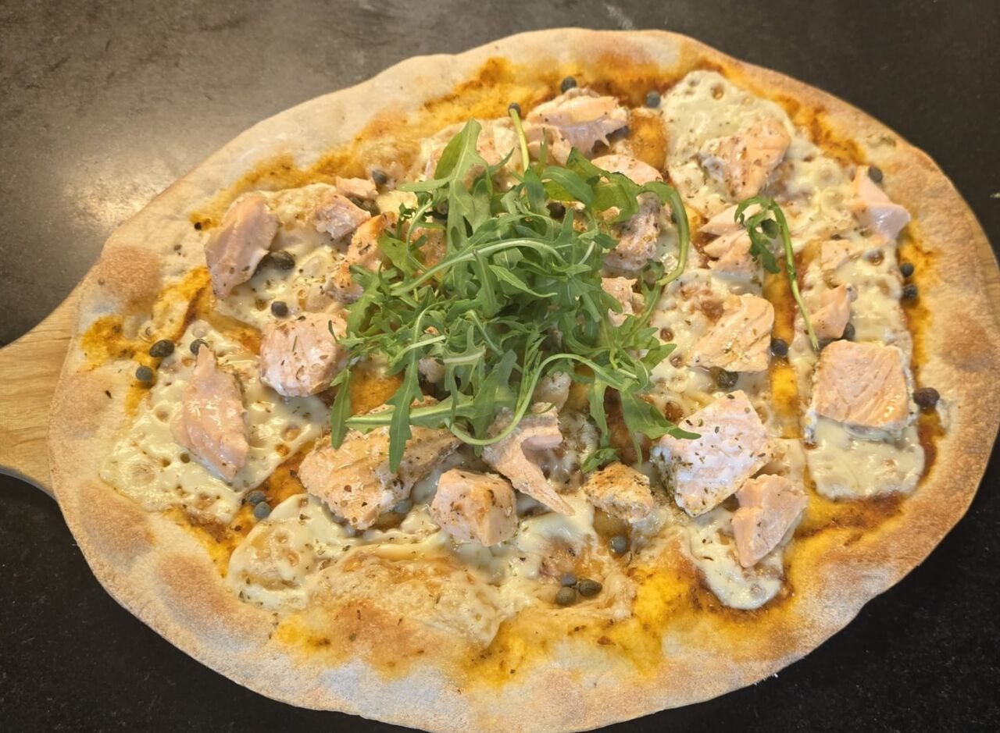

Rijsttafel
39,95 per persoon
- Loempia’s of soep
- Rijst, noodles, groenten en vis
- Spareribs en chicken green curry
- Kipsaté
- Asian dessert
- Filipijns genot
Filipijnse wereldkeuken in het hart van Cuijk
Kom, laten we eten. Zo staat het bij ons op de muur, en zo bedoelen we het ook.
Reserveren? Bel 085 124 7551 of mail info@lynseetcafe.nl

Schuif gezellig aan voor een drankje, een heerlijke lunch of een uitgebreid diner. Bij Lyn’s draait het om lekker eten, gastvrijheid en samen genieten.
Sinds 2023 bouwen wij met ons gezin aan een plek waar iedereen zich welkom voelt. Onze Filipijnse roots vormen het hart van onze keuken, aangevuld met gerechten en smaken uit andere delen van de wereld. Met zorg bereiden we gerechten die we graag met je delen: van onze wokgerechten en streetfood tot een uitgebreide rijsttafel of Filipijnse proeverij.
Ook voor een bubble tea, een frisse smoothie of een ontspannen moment met een kop koffie ben je van harte welkom.

Laat je verrassen door verschillende kleine gerechten en ontdek samen nieuwe smaken. Allebei vanaf 2 personen.
39,95 per persoon
42,95 per persoon
Geen tijd of zin om te koken? Laat ons voor je koken. We bezorgen in het Land van Cuijk: onze Filipijnse gerechten, wokgerechten en andere favorieten, gewoon bij je thuis.
Bestel online en kies ‘Bezorging’ bij het afrekenen. Daar zie je of we op jouw adres bezorgen en wat de bezorgkosten zijn. Afhalen kan natuurlijk ook.
Naar de bestelsiteMet onze catering brengen we de smaken van Lyn’s naar jouw feest, familiebijeenkomst of zakelijke gelegenheid.
Van een verjaardag of familiefeest tot een bedrijfsbijeenkomst: we verzorgen Filipijnse specialiteiten en andere Aziatische gerechten, van kleine hapjes tot een uitgebreid buffet. Op locatie of bij ons. Dieetwensen en allergieën bespreken we vooraf.
Vraag een offerte aan
25 en 26 december
Een Filipijnse proeverij met authentieke gerechten: een feestelijke kennismaking met onze keuken, in een gezellige kerstsfeer. Meer informatie over het menu volgt binnenkort.
Reserveren is verplicht. Spreek ons aan in de zaak of mail naar info@lynseetcafe.nl.
12 december
Karaoke, dance en disco van 18.00 tot 00.00 uur, met dinerbuffet inclusief drankjes voor 36 euro per persoon. Kinderen onder 12 gratis.
Uitverkocht
Jouw nieuwe werkplek? Die smaakt naar meer. We zoeken:
Voor bediening en afwas heb je geen ervaring nodig, wel ben je 16 jaar of ouder. Loop binnen (het sollicitatieformulier ligt in de zaak) of mail naar info@lynseetcafe.nl.
Lyn’s is voor ons meer dan een restaurant: het is onze droom. Een warme plek in Cuijk waar je samen geniet van huisgemaakte Filipijnse gerechten en persoonlijke gastvrijheid. We willen Lyn’s verbeteren en verder laten groeien.
Met een donatie, groot of klein, help je ons daarbij. Kun je niet doneren? Ook door de actie te delen of bij ons te komen eten, steun je ons enorm.
Bekijk de actieJe kunt bij ons betalen met een RestaurantCadeau-kaart en met Diner Cadeau. Verder: contant, pin en contactloos, Mastercard, Visa, Maestro, Diners Club, Apple Pay, PayPal en Ticket Restaurant.
Gasten geven ons 5 sterren voor eten en service.
Grotestraat 3
5431 DG Cuijk
085 124 7551
info@lynseetcafe.nl
Onze actuele openingstijden en keukentijden horen we je graag zelf te vertellen: bel of mail ons even, of kijk op onze sociale media.
Reserveren kan telefonisch, per mail of gewoon in de zaak.